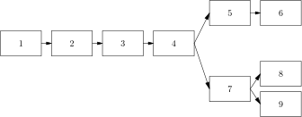

前言
目标
本书是对编程语言的分析性研究。我们的目标是深入有效地理解编程语言的基本概念。这些 概念的重要性久经证实。它们是理解编程语言未来发展的基础。
这些概念多关乎程序元素的语义，或称含义。含义反映了元素在程序执行时应当如何解释。 名为解释器的程序最直接地表现了程序语义，且能执行。它们通过直接分析程序文本的抽象 表示来处理程序。因此我们以解释器为主要载体来表达编程语言元素的语义。
程序作为对象，最富趣味的话题是：“它做什么？”解释器研 究向我们阐明这点。解释器至关重要，因为它发隐抉微，又是更高效编译和其他程序分析的 不二法门。
有一大类系统，根据语法结构将信息从一种形式转换为另一形式，解释器也是它们的示例。 例如，编译器将程序转换为适合硬件或虚拟机解释的形式。虽然通用的编译技术超出本书范 围，但我们确实开发出了几个基本的程序翻译系统。它们反映了编译中典型的程序分析，比 如控制转换，变量绑定解析，以及类型检查。
以下是我们方法的一些独特策略：
每一新概念都用一种小型语言解释。这些语言通常是渐进式的：后面的语言依赖前 面语言的特性。
用语言处理器——如解释器和类型检查器——解释指定语言所写程序的行为。它们以形 式化（无歧义并且完备）和可执行的方式表现语言设计中的决定。
适当的时候，我们用接口和规范建立数据抽象。如此，我们可以改变数据的表示而 不必更改程序。我们以此来研究不同的实现策略。
我们的语言处理器在较高层次写就，用以简括地表示语义；同时也在极低层次写就， 用以理解实现策略。
我们展示了如何用简单的代数操作预测程序行为，推导它们的性质。但我们通常很 少采用数学符号，而是偏爱研究程序的行为，它们是我们语言实现的组成部分。
正文解释关键概念，习题探讨备选设计和其它问题。例如，正文阐述静态绑定，习 题讨论动态绑定。一系列习题将词法寻址的概念用于本书设计的各种语言。
通过层次丰富的抽象，我们能从多个角度看待编程语言。我们的解释器常常提供高层次观点， 用十分简洁的方式表现语言的语义，这与形式数学语义相去不远。另一个极端是，我们展示 了程序如何转换为汇编语言特有的极低层次形式。通过一些小的步骤完成这一转换，我们维 持了高低层次观点之间的清晰联系。
我们对本版做了一些重大改动。对所有重要定义，我们都引入了非正式合约。这有助于阐明 所做的抽象。此外，新增关于模块的章节。为了使实现更容易，第 3、4、5、7 和第 8 章 的源语言假定只能给函数传递一个参数；我们增加了支持多参数过程的习题。 续文传递风格是新增的，因为我们选择了一阶组合式续文传递风格变换，而非关系式的。同 时，由于尾式 (tail-form expression)的性质，我们在这一章使用多参数过程。 在对象和类一章同样如此，但这并非必然。每章都经过修订，新增了很多习题。
组织
前两章为深入学习编程语言奠定了基础。归纳式数据集强调数据的归纳式定义法和递归编程 之间的联系，介绍了几个与变量作用域相关的概念。数据抽象介绍了数据类型工具，由 此引出关于数据抽象的讨论和表示方式转换的例子，这种转换将在后面的章节中使用。
表达式使用这些基础描述编程语言的行为。本章介绍解释器，作为解释语言运行时 行为的机制，并为一门简单的词法作用域语言设计了解释器，该语言支持一等过程和递归。 这个解释器是本书后续部分许多材料的基础。本章结尾详细讨论了一种用索引代替变量的语 言，结果便是，变量查询可由列表引用完成。
状态介绍的新组件——状态——将位置与值对应。加入了它，我们就能研究关于表示 方式的各种问题。此外，它还使我们能够探索按指调用、按名调用和按需调用的参数传递机 制。
传递续文的解释器用续文传递风格重写我们的基础解释器。运行解释器所需的控制结构随之从递 归转变为迭代。这揭示了解释性语言的控制机制，强化了对控制问题的整体直觉。它也使我 们能够用蹦床、异常处理和多线程机制扩展语言。
续文传递风格是上一章的续篇。上一章我们展示了如何把我们熟悉的解释器转换为续文传递 风格，本章我们展示了如何为更大的一类程序完成转换。续文传递风格是一种强大的编程工 具，因为它使几乎所有语言都能实现任意的顺序控制机制。这一算法也是抽象描述源到源程 序转换的例子。
类型将表达式的语言转换为有类型的语言。首先我们实现一个类型检查 器。然后我们展示如何用基于合一的类型推导算法推断程序中的类型。
模块建立类型模块，这极度依赖对前一章的理解。模块既使我们能够建立和强 化抽象边界，又提供了新的定界方式。
对象和类以类为中心，展示了面向对象编程语言的基本概念。我们首先设计了高效的运 行时结构，作为本章第二部分内容的基础。第二部分将类型的类型检查器思想和 第一部分的面向对象编程语言结合起来，结果便是传统的有类型面向对象语言。这要求引入 新的概念，包括接口、抽象方法和强制转换。
“扩展阅读”解释了本书的 每一思想源于何处。虽然有时我们只列出了能接触到的来源，读者泛览本章，仍能窥源访本。
最后，附录 B 介绍了我们的 SLLGEN 解析系统。
各章的依赖关系如下图所示。

用法
本书在本科生和研究生课程中均已使用，也已在职业程序员的持续教育课程中使用。我们假 定的背景知识有数据结构，过程式语言（如C、C++、Java）和 Scheme、ML、Python 或 Haskell 的编程经验。
习题是文本的重要部分，散见于各处。它们难易有别，简单者，理解相关材料便轻而易举 （标为 \textnormal{[}{\star}\textnormal{]}）；困难者，需要花费大量思考和编程工作（标为 \textnormal{[}{\star}{\star}{\star}\textnormal{]}）。大量关于应用，历史以及理论的材料潜藏其间。我们建议读一读 每道习题，想一想如何解决它们。虽然我们用 Scheme 编写解释程序和转换系统，任何支持 一等过程和赋值的语言（ML、Common Lisp、Python、Ruby等等）都足以完成本书练习。
\textnormal{[}{\star}\textnormal{]} 我们常说“某语言具有某性质”。为每种说法找出一种或多 种具有该性质的语言，以及一种或多种不具有该性质的语言。请随意搜索这些信息，不拘 任何编程语言的介绍性书籍（比如 Scott(2005)，Sebesta (2007)，或者 Pratt & Zelkowitz(2001)）。
这是本实践性的书：本书讨论的一切都可在通常的大学课程限度内完成。因为函数式语言的 抽象特性尤其适合这类编程，我们可以写出强大的语言处理系统，既简洁，又能以适当的努 力掌握。
网站由出版社提供，包含本书所有解释器和分析器的完整 Scheme 代码。代码用 PLT Scheme 写成。本书网站已迁移至 http://www.eopl3.com，代码改用 Racket 实现，网址为 https://github.com/mwand/eopl3。——译注我们选择这种 Scheme 实现，是因为它的模块系统和编程环境对学生助益良多。代码多半兼容于 R5RS，当能轻易移植到任何功能完整的 Scheme 实现。